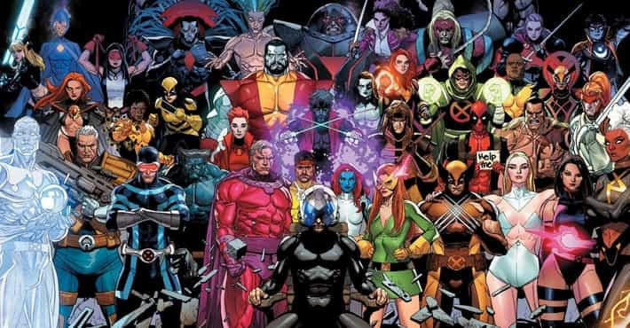

Mutantes
Os mutantes são seres humanos que nascem com uma alteração genética chamada Gene X. Esse gene desperta superpoderes extraordinários, que costumam se manifestar durante a puberdade. Eles são considerados o passo seguinte da evolução natural e chamados de Homo superior.
